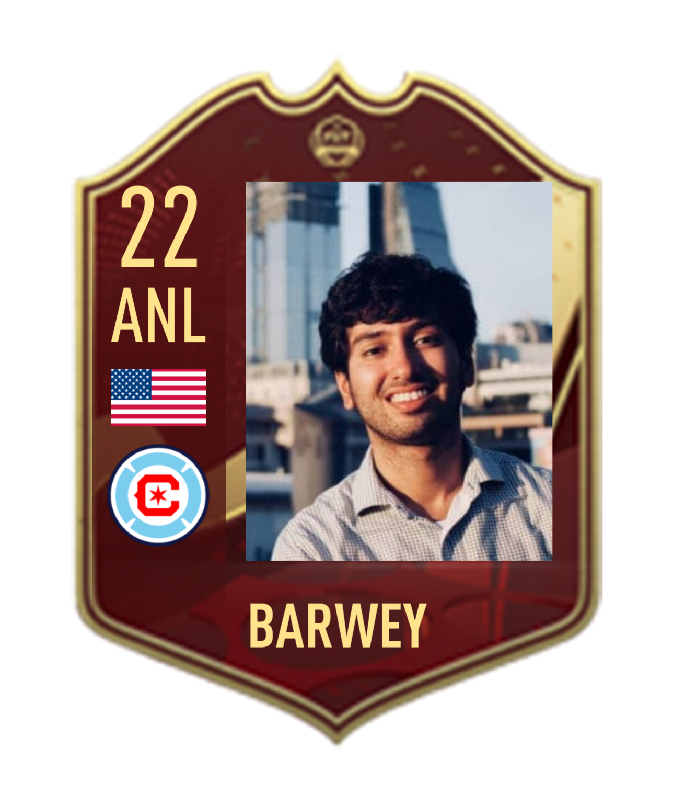
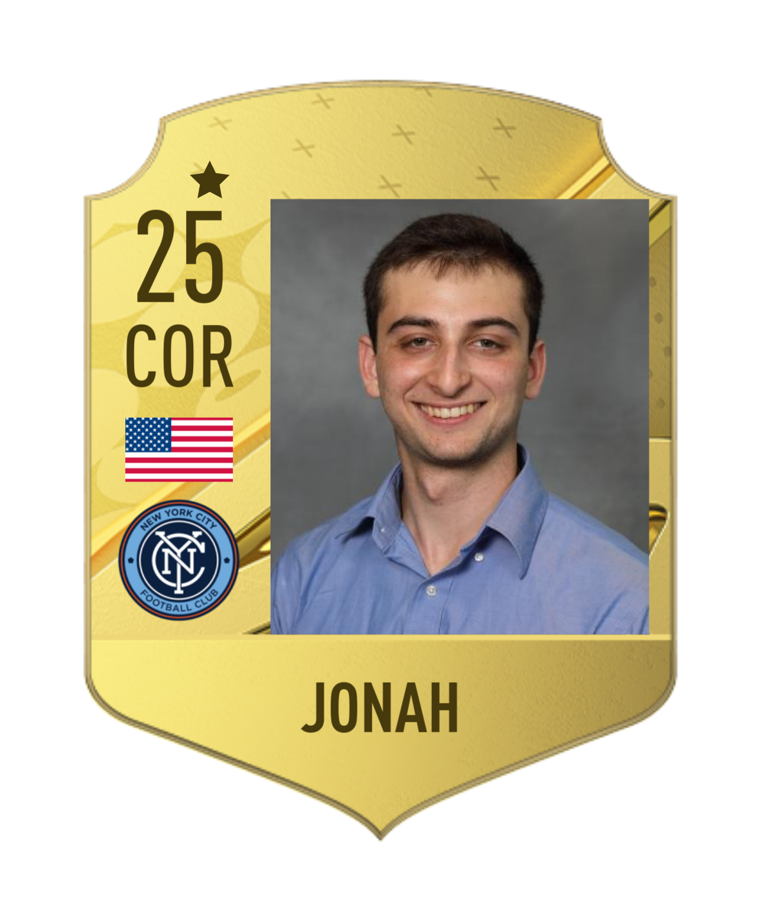

Dr. Shivam Barwey: Reduced-order modeling of high dimensional fluid dynamical systems, graph-based learning, federated machine learning, high-performance computing, Postdoctoral Fellow.

Jonah Botvinick Greenhouse (Cornell University): Deep learning for stochastic dynamical systems, 2022 National Science Foundation, Mathematical Sciences Graduate Intern and Argonne Visiting Graduate Student.

Former Members
Gurpreet Singh Hora (Columbia University): Adaptive training of deep learning surrogates in OpenFOAM (with Laurent White at AMD Research).
Cyril Le Doux (University of Chicago): Deep learning emulators for geophysical modeling, 2022 DOE Summer Undergraduate Intern (SULI).
Sen Lin (University of Houston): Anomaly detection in dynamical systems using Bayesian online changepoint detection, Givens Associateship, 2022.
Sahil Bhola (University of Michigan, Ann-Arbor): Multifidelity reinforcement learning for computational fluid dynamics, Research Aide, 2021.
Alec Linot (University of Wisconsin, Madison): Deep learning surrogate models on inertial manifolds, Givens Associateship, 2021.
William McClure (IIT-Chicago): Estimating the Generator of SDEs Using Temporal Normalizing Flows, Masters Thesis, 2021.
Janah Richardson (Walter Payton College Prep High School): Causal Relationship Between Environmental Factors and Social Mobility, Afro-Academic, Cultural, Technological and Scientific Olympics (ACT-SO) High School Research Program, 2020-2021. Gold medal winner in Computer Science category - Illinois.
Suraj Pawar (Oklahoma State University): Scalable reinforcement learning for computational fluid dynamics, ALCF Summer Internship Project, 2020.
Dominic Skinner (MIT): Deep learning reduced-order models for computational physics applications, National Science Foundation, Mathematical Sciences Graduate Internship, Summer 2020.